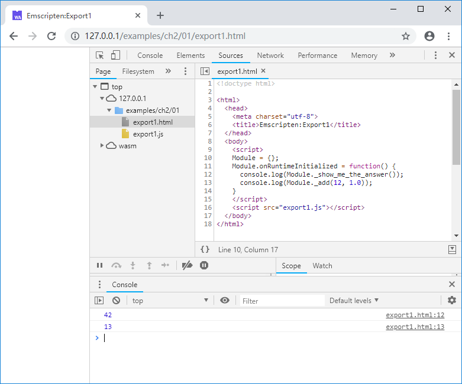
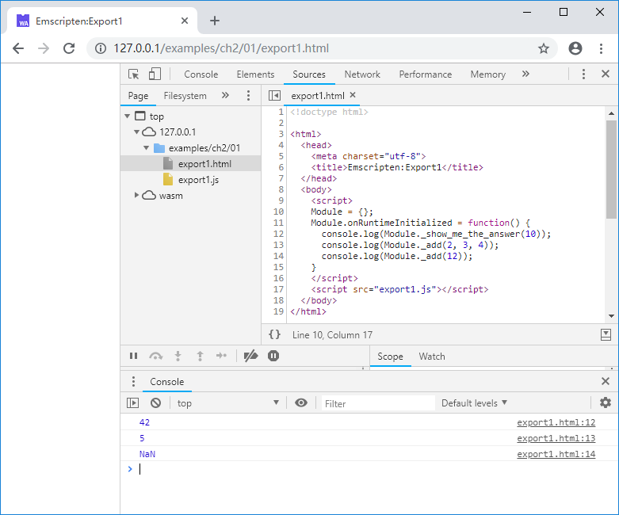

2.1 JavaScript调用C函数
一个具备实用功能的WebAssembly模块，必然提供了供外部调用的函数接口。在1.3中，我们展示了通过Module._main()调用C/C++入口main()函数的方法——假如main()函数存在的话。本节将介绍普通C函数导出，供JavaScript使用的方法。
2.1.1 定义函数导出宏
为了方便函数导出，我们需要先定义一个函数导出宏，该宏需要完成以下功能：
- 使用C风格符号修饰。我们知道，由于引入了多态、重载、模板等特性，C++语言环境下的符号修饰策略（既函数、变量在最终编译成果中的名字的生成规则）非常复杂，并且不同的C++编译器有着各自的符号修饰策略，如果不做额外处理，我们在C++中创建函数的时候，很难预知它在最终编译成果中的名字——这与C语言环境完全不同。因此当我们试图将
main()函数之外的全局函数导出至JavaScript时，必须强制使用C风格的符号修饰，以保持函数名称在C/C++环境以及JavaScript环境中有统一的对应规则。 - 避免函数因为缺乏引用而导致在编译时被优化器删除。如果某个导出函数仅供JavaScript调用，而在C/C++环境中从未被使用，开启某些优化选项（比如
-O2以上）时，函数有可能被编译器优化删除，因此需要提前告知编译器：该函数必须保留，不能删除，不能改名。 - 为了保持足够的兼容性，宏需要根据不同的环境——原生NativeCode环境与Emscripten环境、纯C环境与C++环境等——自动切换合适的行为。
info
main()作为C/C++程序的主入口，其符号修饰策略是特殊的，因此即使在C++中不作特殊约束，其最终的符号仍然是_main()，无需按上述第1点进行处理。tips 正如序中提到的，编写既可以在C/C++原生NativeCode环境中使用、又可以在Emscripten环境中使用的“对编译目标不敏感”的模块是本书坚持的理念，上述第3点要求正是该理念的产物。后续章节同理，不再赘述。
为了满足上述要求，定义EM_PORT_API宏如下：
#ifndef EM_PORT_API
# if defined(__EMSCRIPTEN__)
# include <emscripten.h>
# if defined(__cplusplus)
# define EM_PORT_API(rettype) extern "C" rettype EMSCRIPTEN_KEEPALIVE
# else
# define EM_PORT_API(rettype) rettype EMSCRIPTEN_KEEPALIVE
# endif
# else
# if defined(__cplusplus)
# define EM_PORT_API(rettype) extern "C" rettype
# else
# define EM_PORT_API(rettype) rettype
# endif
# endif
#endif
在上述代码中：
__EMSCRIPTEN__宏用于探测是否是Emscripten环境__cplusplus用于探测是否C++环境EMSCRIPTEN_KEEPALIVE是Emscripten特有的宏，用于告知编译器后续函数在优化时必须保留，并且该函数将被导出至JavaScript
使用EM_PORT_API定义函数声明：
EM_PORT_API(int) Func(int param);
在Emscripten中最终将被展开如下：
#include <emscripten.h>
extern "C" int EMSCRIPTEN_KEEPALIVE Func(int param);
2.1.2 在JavaScript中调用C导出函数
根据1.3中对胶水代码的分析，我们知道JavaScript环境中的Module对象已经封装了C环境导出的函数，封装方法的名字是下划线_加上C环境的函数名。例如我们创建C代码文件export1.cc如下：
//export1.cc
#ifndef EM_PORT_API
# if defined(__EMSCRIPTEN__)
# include <emscripten.h>
# if defined(__cplusplus)
# define EM_PORT_API(rettype) extern "C" rettype EMSCRIPTEN_KEEPALIVE
# else
# define EM_PORT_API(rettype) rettype EMSCRIPTEN_KEEPALIVE
# endif
# else
# if defined(__cplusplus)
# define EM_PORT_API(rettype) extern "C" rettype
# else
# define EM_PORT_API(rettype) rettype
# endif
# endif
#endif
#include <stdio.h>
EM_PORT_API(int) show_me_the_answer() {
return 42;
}
EM_PORT_API(float) add(float a, float b) {
return a + b;
}
使用emcc命令将其编译为wasm：
emcc export1.cc -o export1.js
创建页面export1.html如下：
<!doctype html>
<html>
<head>
<meta charset="utf-8">
<title>Emscripten:Export1</title>
</head>
<body>
<script>
Module = {};
Module.onRuntimeInitialized = function() {
console.log(Module._show_me_the_answer());
console.log(Module._add(12, 1.0));
}
</script>
<script src="export1.js"></script>
</body>
</html>
发布并使用浏览器打开上述网页后，我们将在开发者面板的控制台得到以下输出：

需要注意的是，JavaScript是弱类型语言，在调用函数时，并不要求调用方与被调用方的签名一致，这与C/C++有本质性的不同。例如在C环境中，以下调用都不符合语法：
int k = show_me_the_answer(10);
float f1 = add(12, 12, 12);
float f2 = add(12);
但是在JavaScript环境中，如果给出的参数个数多于函数形参个数，多余的参数被舍弃（从左至右）；如果参数个数少于形参个数，不足的参数会自动以undefined填充。因此下列JavaScript调用都是合法的：
console.log(Module._show_me_the_answer(10));
console.log(Module._add(2, 3, 4));
console.log(Module._add(12));
其输出为：

注意第三个调用，虽然语法上是合法的，但是由于缺少的参数以undefined填充而不是0值填充，因此函数返回结果为NaN。
tips 注意我们在页面中使用了1.3中介绍的
onRuntimeInitialized回调的方式注入测试代码。为了省略无关信息方便阅读，在不产生歧义的情况下后续章节将不再重复列出回调注入的完整代码以及EM_PORT_API宏的定义。